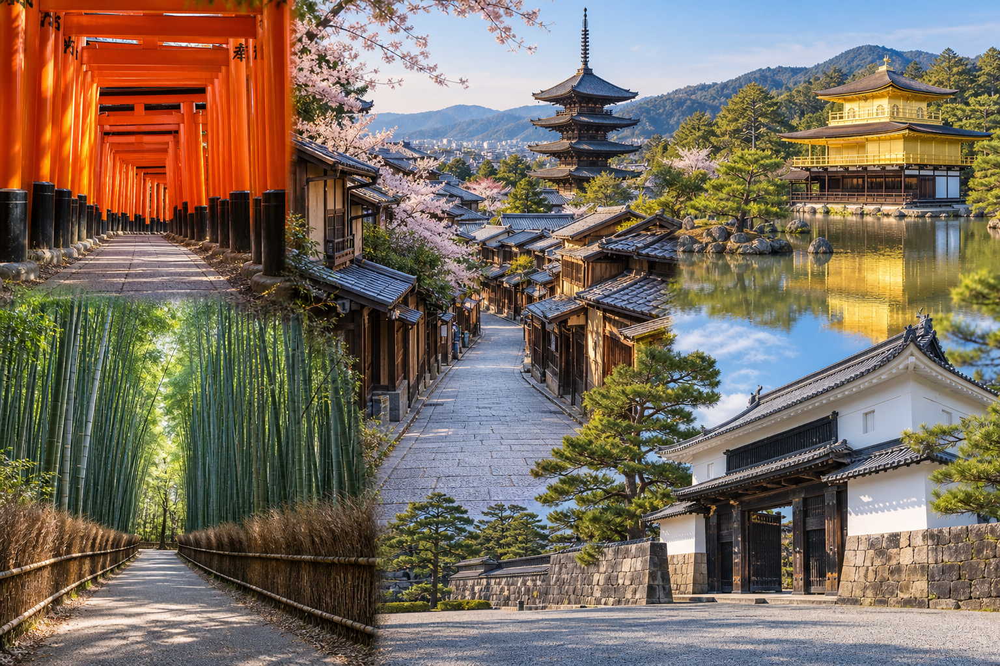
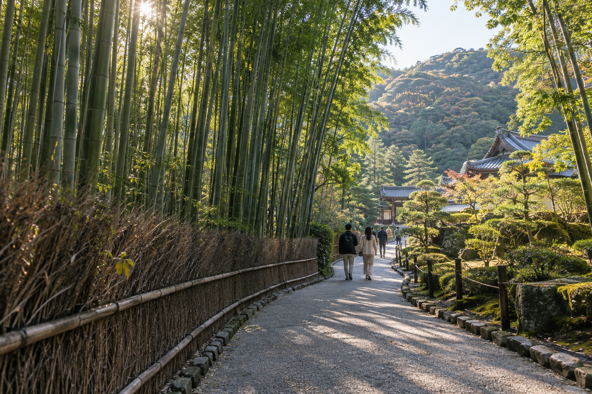
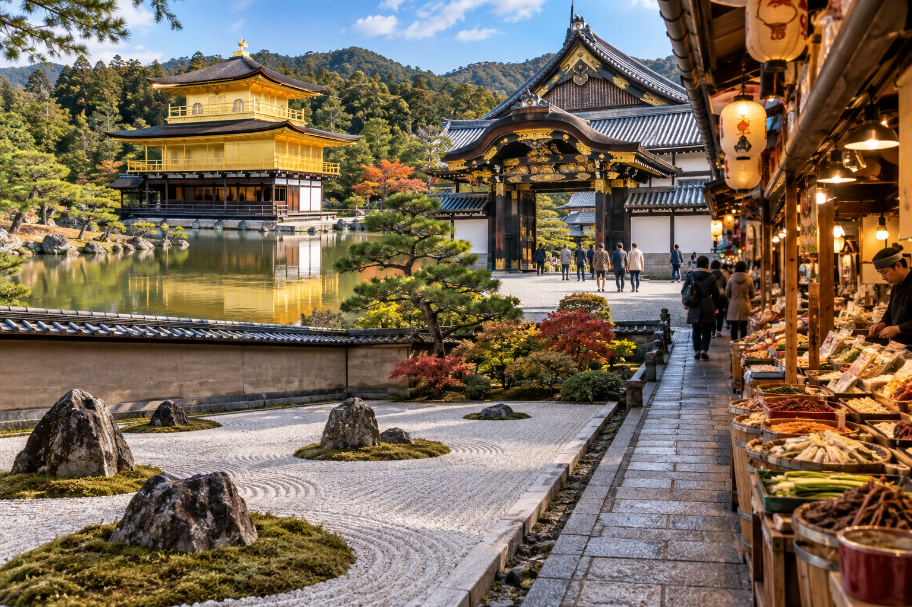

Kyoto 3-Day Itinerary
Three days in Kyoto gives a first-time visitor enough time to see the city's major highlights without turning every day into a race. The key is not simply adding more attractions to a two-day route. The extra day should reduce cross-city travel, give major areas more time, and leave room for gardens, historic streets, meals, and breaks.
This itinerary divides Kyoto into three clear geographic days. Day 1 moves from southern Kyoto into Higashiyama and Gion. Day 2 gives western Kyoto and Arashiyama the time they deserve. Day 3 combines northern Kyoto with central sights and finishes around Nishiki Market and downtown.
The itinerary assumes three full sightseeing days. If you arrive from Tokyo or Osaka in the afternoon, treat that arrival period separately rather than counting it as Day 1.
Kyoto 3-Day Itinerary at a Glance

| Day | Route | Main Experience |
|---|---|---|
| Day 1 | Fushimi Inari → Tofuku-ji → Kiyomizu-dera → Higashiyama → Gion | Shrines, temples and historic eastern Kyoto |
| Day 2 | Arashiyama Bamboo Grove → Tenryu-ji → Saga/ Arashiyama → Togetsukyo → optional Monkey Park or quieter temples | Bamboo, gardens, mountains and western Kyoto |
| Day 3 | Kinkaku-ji → Ryoan-ji → Nijo Castle → Nishiki Market → Downtown Kyoto | Northern temples, history , food and central Kyoto |
The biggest difference from a two-day Kyoto trip is pace.
You are no longer trying to connect Arashiyama, Kinkaku-ji, and Nishiki in one compressed day.
Each part of Kyoto gets more room.
Who Is This Kyoto 3-Day Itinerary For?
This route works best if:
- ✓It is your first visit to Kyoto
- ✓You have three complete days
- ✓You want the major first-time highlights
- ✓You enjoy temples but do not want temple fatigue
- ✓You are comfortable with substantial walking
- ✓You want a mixture of culture, food, scenery, and neighborhoods
- ✓You prefer efficient geographic planning
It is not designed as a checklist of every famous Kyoto attraction.
Even with three days, some important places are deliberately left out.
That is necessary for a realistic itinerary.
Is Three Days Enough for Kyoto?
Yes.
For many first-time visitors, three full days is one of the best trip lengths for Kyoto.
Compared with two days, the third day gives you room to:
- ✓Spend more time in Arashiyama
- ✓Add another meaningful temple rather than rushing
- ✓Explore northern Kyoto properly
- ✓Include Nijo Castle
- ✓Slow down in Higashiyama
- ✓Have proper meals
- ✓Adjust for crowds or weather
You still will not see all of Kyoto.
You do not need to.
Should You Spend Four or Five Days in Kyoto Instead?
You can.
Extra days are useful if you want:
- ✓Philosopher's Path
- ✓Ginkaku-ji
- ✓Nanzen-ji
- ✓More northern temples
- ✓Fushimi sake district
- ✓Ohara
- ✓Kurama or Kibune
- ✓More gardens
- ✓Craft or tea experiences
- ✓A slower cultural trip
But for a classic first visit, three full days gives you a strong balance.
Where Should You Stay for This Itinerary?
Your detailed accommodation decision belongs in Where to Stay in Kyoto: Best Areas for First-Time Visitors.
For this route, strong broad bases include:
- ✓Kyoto Station area
- ✓Downtown Kyoto
- ✓Gion/Higashiyama side
The main rule is:
Stay near useful transport and use one hotel for all three nights.
Do not change accommodation just because each day covers a different part of Kyoto.
How Early Should You Start?
Two of the three days benefit from an early start.
Day 1
Start Fushimi Inari around:
7:00–8:00 AM
Day 2
Reach Arashiyama around:
7:00–8:00 AM
Day 3
You can start closer to normal temple opening times because Kinkaku-ji and Ryoan-ji have set visiting hours.
This gives you two early mornings rather than forcing all three days to begin before sunrise.
Day 1: Fushimi Inari, Tofuku-ji, Kiyomizu-dera, Higashiyama and Gion
Day 1 introduces the historic and religious side of Kyoto.
The route is:
Fushimi Inari → Tofuku-ji → Kiyomizu-dera → Sannenzaka and Ninenzaka → Yasaka Shrine → Gion
This works geographically because you begin in southern Kyoto and gradually move north into eastern Kyoto.
Once you reach Higashiyama, much of the remainder of the day becomes walkable.
7:00–8:45 AM: Fushimi Inari Taisha
Begin at Fushimi Inari Taisha.
The shrine's thousands of vermilion torii gates make it one of Kyoto's most recognizable sights.
Starting early is useful because the lower sections become increasingly busy later in the morning.
How Far Should You Hike?
With three days in Kyoto, you have slightly more flexibility than on the two-day route.
You can walk farther if you genuinely enjoy:
- ✓Hiking
- ✓Shrine paths
- ✓Forest
- ✓Quieter upper sections
But you still do not need to complete the entire mountain route.
A sensible first-time visit may include:
- ✓Main shrine
- ✓Lower torii tunnels
- ✓A meaningful uphill section
- ✓One or two quieter points farther up
Then return.
When Should You Do the Full Mount Inari Hike?
Consider completing much more of the route if:
- ✓Hiking is a major interest
- ✓Weather is comfortable
- ✓You started very early
- ✓You are willing to skip Tofuku-ji
Do not complete the full climb simply because you think it is required.
It is not.
Why Day 1 Starts Here?
Fushimi Inari works well first because:
- ✓It is open for access early
- ✓You avoid part of the main daytime crowd
- ✓You handle uphill walking while fresh
- ✓It connects naturally toward Tofuku-ji and eastern Kyoto
This is much more efficient than visiting Fushimi Inari in the middle of a northern or western Kyoto day.
8:45–9:15 AM: Move to Tofuku-ji
Next, continue to Tofuku-ji.
The two areas are close enough that adding Tofuku-ji here makes geographical sense.
This is one of the advantages of having a third Kyoto day.
In the two-day itinerary, there was little reason to add another temple before Higashiyama.
With three days, you can include one additional major cultural stop without destroying the pace.
9:15–10:30 AM: Tofuku-ji
Tofuku-ji is a major Zen temple known for:
- ✓Temple architecture
- ✓Gardens
- ✓Tsutenkyo Bridge
- ✓Seasonal maple scenery
- ✓Quieter atmosphere outside peak periods
It is especially famous in autumn.
Why Tofuku-ji Is a Good Third-Day-Itinerary Addition?
It provides a different experience from Fushimi Inari.
Fushimi Inari is about:
- ✓Shrine paths
- ✓Torii gates
- ✓Mountain walking
Tofuku-ji adds:
- ✓Zen architecture
- ✓Garden design
- ✓Temple grounds
That makes the morning more varied.
Is Tofuku-ji Mandatory?
No.
Treat it as the first major optional stop in this itinerary.
Keep Tofuku-ji If:
- ✓You enjoy Zen temples
- ✓Gardens interest you
- ✓You are visiting during autumn
- ✓You started Fushimi Inari on time
Skip Tofuku-ji If:
- ✓You completed a long Mount Inari hike
- ✓You want more time in Higashiyama
- ✓You already feel temple fatigue
- ✓Your group needs a slower pace
If you skip it, go directly toward Kiyomizu-dera.
Autumn Requires Extra Time
Tofuku-ji is particularly famous for autumn foliage.
During the busiest foliage period, expect:
- ✓More visitors
- ✓More time at entrances
- ✓Slower movement
- ✓More photography stops
Do not try to preserve the exact schedule during peak autumn dates.
If Tofuku-ji becomes the highlight of your morning, let it.
10:30–11:15 AM: Travel Toward Kiyomizu-dera
Continue north toward Higashiyama.
Depending on your route, you can use a combination of:
- ✓Keihan railway
- ✓Walking
- ✓Bus
- ✓Taxi
Do not automatically return to Kyoto Station.
Your day should continue north.
Remember that the final approach to Kiyomizu-dera includes an uphill walk.
11:15 AM–12:45 PM: Kiyomizu-dera
Spend late morning at Kiyomizu-dera.
This is one of the most important first-time Kyoto sights and deserves more than a rushed photo stop.
Explore:
- ✓Main hall
- ✓Wooden terrace
- ✓Views across Kyoto
- ✓Temple grounds
- ✓Hillside setting
Why Visit Kiyomizu After Fushimi and Tofuku-ji?
Once you reach Kiyomizu-dera, you no longer need another major transport journey for most of the day.
From here, you can gradually walk:
Kiyomizu → Higashiyama → Yasaka → Gion
That gives Day 1 a clear direction.
Do Not Add Another Distant Temple Here
You may see recommendations suggesting:
- ✓Kinkaku-ji
- ✓Arashiyama
- ✓Nijo Castle
later the same day.
Do not do that.
Those places already have their own geographic day in this itinerary.
Use the extra time to experience eastern Kyoto properly.
12:45–2:00 PM: Sannenzaka, Ninenzaka and Lunch
After Kiyomizu-dera, walk downhill into the historic Higashiyama streets.
Explore:
- ✓Sannenzaka
- ✓Ninenzaka
- ✓Traditional-style shops
- ✓Cafes
- ✓Craft stores
- ✓Tea
- ✓Sweets
This is also a good time for lunch.
Do Not Rush Straight to Gion?
The streets between Kiyomizu and Gion are part of the experience.
If you only photograph the temple and then take transport directly to Gion, you miss one of Kyoto's strongest walking areas.
Lunch Strategy
Choose somewhere that fits the route.
Possible options include:
- ✓Soba
- ✓Udon
- ✓Tofu
- ✓Set meals
- ✓Sushi
- ✓Casual Japanese restaurants
Do not spend an hour queueing for a restaurant unless eating there is personally important.
2:00–4:00 PM: Deeper Higashiyama Walk
Three days gives you more time here than the compact two-day itinerary.
Continue gradually through eastern Kyoto.
Possible stops include:
- ✓Yasaka Pagoda surroundings
- ✓Kodai-ji
- ✓Ishibe-koji area where public access is permitted
- ✓Small shops
- ✓Cafes
- ✓Temple gardens
You do not need to visit all of them.
Choose according to your interests.
Optional: Kodai-ji
Kodai-ji is a useful addition if you want one more temple and garden.
It fits geographically.
That is much better than taking a bus across the city for another famous temple.
Choose Kodai-ji If:
- ✓Gardens interest you
- ✓You enjoy temple architecture
- ✓You have good energy
Skip It If:
- ✓Tofuku-ji already gave you enough temple time
- ✓You want to linger in historic streets
- ✓You prefer a long cafe break
The extra third day should create choices, not pressure.
4:00–4:45 PM: Yasaka Shrine
Continue toward Yasaka Shrine.
This is a natural transition point between Higashiyama and Gion.
You can explore the shrine grounds before moving toward the evening part of Day 1.
Because it fits directly into the walking route, it does not create another logistical problem.
4:45 PM Onward: Gion
Finish Day 1 in Gion.
By late afternoon and early evening, the area takes on a different atmosphere from the busiest midday sightseeing period.
Explore public streets around:
- ✓Gion
- ✓Hanamikoji area
- ✓Shirakawa side
- ✓Nearby central streets
depending on current access rules and your interests.
Gion Is a Working Neighborhood
Do not:
- ✓Follow geiko or maiko
- ✓Stop them for photographs
- ✓Enter private lanes
- ✓Block entrances
- ✓Ignore signs prohibiting photography
Traditional architecture does not turn residential property into a public photo set.
Do You Need to See a Geiko or Maiko?
No.
Do not build the success of your Gion visit around seeing one.
The district is worth visiting for:
- ✓Streets
- ✓Architecture
- ✓Restaurants
- ✓Evening atmosphere
- ✓Cultural history
If you happen to see a geiko or maiko moving to an appointment, respect their space.
Dinner: Gion, Pontocho or Downtown
Finish with dinner nearby.
Good broad areas include:
- ✓Gion
- ✓Pontocho surroundings
- ✓Kawaramachi
- ✓Kiyamachi
- ✓Downtown Kyoto
This lets you finish Day 1 without another long transport journey.
Day 1 Schedule Summary
| Time | Stop |
|---|---|
| 7:00–8:45 AM | Fushimi Inari |
| 8:45–9:15 AM | Transfer |
| 9:15–10:30 AM | Tofuku-ji |
| 10:30–11:15 AM | Transfer toward Kiyomizu |
| 11:15 AM–12:45 PM | Kiyomizu-dera |
| 12:45–2:00 PM | Sannenzaka / Ninenzaka + lunch |
| 2:00–4:00 PM | Higashiyama |
| 4:00–4:45 PM | Yasaka Shrine |
| 4:45 PM onward | Gion |
| Evening | Dinner |
These are flexible windows.
If you spend longer at Fushimi Inari, remove Tofuku-ji.
If you spend longer at Tofuku-ji, shorten the optional Higashiyama stops.
Do not rush the entire route simply to preserve every line in the schedule.
Why Day 1 Works?
The day progresses broadly:
south → east → north through Higashiyama
You begin with a mountain shrine, add one major Zen temple, then spend the rest of the day inside one connected historic area.
That means more of your time is spent:
- ✓Walking
- ✓Exploring
- ✓Eating
- ✓Visiting cultural sites
and less is spent crossing Kyoto in buses.
What to Skip if Day 1 Runs Late?
Use this order.
Skip First
- ✓Kodai-ji
- ✓Extra shopping
- ✓Long cafe stops
Skip Next
Tofuku-ji
if Fushimi Inari takes much longer than planned.
Protect
- ✓Fushimi Inari
- ✓Kiyomizu-dera
- ✓Main Higashiyama walk
Gion remains flexible because it works into the evening.
The itinerary should never force you to sprint through Kiyomizu-dera simply because an optional temple took longer in the morning.
Day 2: A Full Day in Arashiyama and Saga

Day 2 is deliberately slower than the Arashiyama section of the two-day itinerary.
Instead of:
Arashiyama → Kinkaku-ji → central Kyoto
you stay in western Kyoto and experience the area properly.
The core route is:
Bamboo Grove → Tenryu-ji → Togetsukyo Bridge → lunch → one afternoon choice → relaxed Arashiyama evening
Your afternoon choice can be:
- ✓Okochi Sanso Garden
- ✓Iwatayama Monkey Park
- ✓Quieter Saga and Okusaga
- ✓More temples and gardens
- ✓A slower river-and-town afternoon
Do not try to complete all of these.
That would turn the slower three-day itinerary back into a rushed checklist.
7:00–8:15 AM: Start at the Arashiyama Bamboo Grove
Begin with the Arashiyama Bamboo Grove.
Starting early gives you the best chance of experiencing the path before the busiest daytime period.
The bamboo grove itself is not huge.
You do not need two hours just to walk through it.
Take your time, but do not spend the entire morning waiting for an empty photograph.
How to Reach Arashiyama?
If you are coming from around Kyoto Station, the JR Sagano Line toward Saga-Arashiyama Station is often practical.
The bamboo grove is roughly a 10-minute walk from JR Saga-Arashiyama Station.
Other travelers may arrive using:
- ✓Randen
- ✓Hankyu
- ✓Bus
- ✓Taxi
depending on the location of their hotel.
Use the route that makes sense from your accommodation.
The Bamboo Grove Is Public Space
Do not:
- ✓Carve bamboo
- ✓Touch or damage stalks
- ✓Block the path for extended photos
- ✓Set up equipment that prevents other visitors from passing
Kyoto has specifically asked visitors to help protect the bamboo after damage to stalks in the area.
Enjoy the setting without treating it as a private photo studio.
Nonomiya Shrine
You may pass Nonomiya Shrine around the bamboo area.
It can be a short addition if:
- ✓You are interested
- ✓It is not crowded
- ✓You are already walking past it
You do not need to create another scheduled hour around the shrine.
The value of the morning comes from moving naturally through the area.
8:30–10:00 AM: Tenryu-ji
Next, visit Tenryu-ji.
This is one of the strongest reasons not to treat Arashiyama as only a bamboo destination.
The temple is known especially for its historic Zen garden and the way surrounding mountains become part of the garden composition.
Tenryu-ji currently opens its garden at 8:30 AM, which fits naturally after an early bamboo visit.
What Should You Prioritize at Tenryu-ji?
For a first visit, focus on:
- ✓Sogenchi Pond Garden
- ✓Mountain backdrop
- ✓Temple architecture
- ✓Seasonal scenery
You can choose between:
- ✓Garden-only admission
- ✓Garden plus temple buildings
depending on your interests and available time.
Do not feel that you need every optional admission simply because you are there.
Why Tenryu-ji Deserves More Time on the 3-Day Route?
On a short Kyoto trip, temples can become quick stops.
Here, you have enough time to:
- ✓Sit for a few minutes
- ✓Look across the pond
- ✓Notice the garden layout
- ✓Slow the pace
That is exactly what the third Kyoto day should give you.
Seasonal Note
Tenryu-ji is particularly attractive during:
- ✓Spring
- ✓Autumn
But those periods also increase visitor numbers.
Its official 2026 schedule includes special earlier garden admission during part of the peak autumn period.
For normal planning, use the current opening information close to your travel date.
10:00–11:00 AM: Choose Okochi Sanso or More Bamboo/Saga Walking
You now have your first meaningful choice.
Option A: Okochi Sanso Garden
Choose Okochi Sanso if you like:
- ✓Gardens
- ✓Views
- ✓Quiet walking
- ✓Landscaped spaces
The garden was created by Japanese film actor Denjiro Okochi and sits near the upper end of the bamboo area.
It offers views toward:
- ✓Arashiyama
- ✓Mountains
- ✓Kyoto
The official Kyoto tourism listing currently gives regular hours of approximately 9:00 AM–5:00 PM, with last admission before closing.
Why Choose Okochi Sanso?
It is a strong option if you want the second day to feel:
- ✓Slower
- ✓More scenic
- ✓Less attraction-heavy
It can also provide a useful contrast to the crowded bamboo path.
Option B: Stay Flexible Around Saga
If another garden is not important, continue slowly through:
- ✓Bamboo paths
- ✓Small streets
- ✓Saga neighborhood
You do not need to replace every skipped attraction with another attraction.
An unstructured hour can be one of the benefits of having three days.
11:00 AM–12:00 PM: Togetsukyo Bridge and Katsura River
Move toward Togetsukyo Bridge.
The bridge crosses the Katsura River with the Arashiyama hills behind it.
Instead of treating it only as a photo stop, spend time around:
- ✓Riverbank
- ✓Bridge views
- ✓Mountain scenery
- ✓Nearby streets
This is where western Kyoto begins to feel very different from the dense historic streets of Day 1.
Walk Along the River
If the weather is good, walk for a while along the river.
There is no required endpoint.
This can be one of the most relaxing parts of the three-day itinerary.
You already visited several major cultural sites on Day 1.
You do not need another temple every hour.
12:00–1:15 PM: Lunch in Arashiyama
Have a proper lunch before choosing your afternoon route.
Possible options include:
- ✓Soba
- ✓Udon
- ✓Tofu cuisine
- ✓Tempura
- ✓Rice dishes
- ✓Casual Japanese set meals
Arashiyama can become crowded during lunchtime, particularly on:
- ✓Weekends
- ✓Spring dates
- ✓Autumn dates
An earlier lunch may reduce waiting.
Optional: Shigetsu at Tenryu-ji
Travelers interested in Buddhist vegetarian cuisine may encounter Shigetsu, Tenryu-ji's Zen vegetarian restaurant.
Treat it as a specific dining experience rather than something everyone needs to include.
If you plan a meal that requires a reservation, shape the morning around that reservation instead of rushing the temple.
1:15 PM: Choose Your Arashiyama Afternoon
This is the biggest difference between a weak itinerary and a strong one.
Do one main afternoon style.
Choose based on what you actually enjoy.
Option 1: Iwatayama Monkey Park
Choose the Arashiyama Monkey Park Iwatayama if:
- ✓Wildlife interests you
- ✓You are comfortable with uphill walking
- ✓The weather is reasonable
- ✓You still have physical energy
The entrance is on the south side of the river near the Togetsukyo area.
The Climb Matters
The monkeys are not waiting beside the entrance.
You need to walk uphill.
This makes Monkey Park a poor choice if:
- ✓Summer heat is intense
- ✓Heavy rain is falling
- ✓You have mobility limitations
- ✓Your legs are already tired
Do not add it only because it is popular.
Why the Monkey Park Fits Better in the 3-Day Itinerary
In the two-day Kyoto route, adding Monkey Park created pressure on Kinkaku-ji and central Kyoto.
Here, the entire afternoon remains in Arashiyama.
That gives you enough time to visit without immediately watching the clock.
Wildlife Etiquette
Follow the park's current rules.
Do not:
- ✓Touch the monkeys
- ✓Chase them
- ✓Crowd them for photos
- ✓Offer food outside permitted procedures
They are wild animals.
Treat the visit accordingly.
Option 2: Quieter Saga and Okusaga
This is my preferred alternative for travelers who want something different from the busiest Arashiyama attractions.
Continue toward the quieter Saga/Okusaga side.
Kyoto's official tourism guidance specifically highlights this area as a quieter contrast to the famous bamboo grove and bridge.
Possible stops include:
- ✓Rakushisha
- ✓Adashino Nenbutsu-ji
- ✓Otagi Nenbutsu-ji
- ✓Saga Toriimoto streets
- ✓Quiet countryside-style lanes
You do not need all of them.
Choose two or three depending on distance and interest.
Rakushisha
Rakushisha is a small historic cottage associated with poet Mukai Kyorai, a disciple of Matsuo Basho.
This is not a blockbuster attraction.
That is part of its value.
It suits travelers who enjoy:
- ✓Literature
- ✓Traditional atmosphere
- ✓Small historic sites
- ✓Quiet breaks
If that sounds uninteresting to you, skip it.
Saga Toriimoto
The Saga Toriimoto side gives you a slower street experience.
Expect a different atmosphere from central Arashiyama.
This is a useful place to simply:
- ✓Walk
- ✓Look at older buildings
- ✓Stop for tea
- ✓Slow down
The three-day itinerary has enough room for this.
Otagi Nenbutsu-ji
If you continue farther, Otagi Nenbutsu-ji is known for its large number of distinctive stone rakan statues.
It provides a very different temple experience from:
- ✓Kiyomizu-dera
- ✓Tenryu-ji
- ✓The major golden or grand temple sites
Its farther location also means you should treat it as part of an Okusaga afternoon, not a quick extra attraction.
Taxi Can Be Useful Here
If you go farther into Okusaga, a taxi can help with:
- ✓Reaching the far end first
- ✓Reducing uphill walking
- ✓Returning toward central Arashiyama
One useful strategy is:
taxi outward → walk gradually back
rather than walking the same route in both directions.
Option 3: Garden and Temple Afternoon
Choose this version if religious architecture and gardens are your main Kyoto interests.
Instead of Monkey Park, spend more time around:
- ✓Tenryu-ji
- ✓Okochi Sanso
- ✓Smaller Saga temples
- ✓Seasonal gardens
This is particularly strong in:
- ✓Spring
- ✓Autumn
But watch for temple fatigue.
Day 1 already included several religious sites.
The purpose is depth, not increasing your temple count.
Option 4: Slow Arashiyama Afternoon
This is completely valid.
Do:
river → long lunch → cafe → shops → local walk → early evening
This works particularly well if:
- ✓Day 1 was tiring
- ✓You are traveling as a couple
- ✓You have children
- ✓The weather is warm
- ✓You simply prefer slow travel
A three-day itinerary should have enough space for a day like this.
Should You Add the Sagano Scenic Railway?
The Sagano Scenic Railway can be worthwhile if scenic train travel is one of your priorities.
But it changes the day's structure.
I would use it as a substitute for another afternoon activity.
Do not plan:
Bamboo → Tenryu-ji → Okochi → river → Monkey Park → Scenic Railway → Okusaga
That defeats the purpose of this itinerary.
Choose the Scenic Railway If:
- ✓Train scenery interests you
- ✓Seasonal landscapes are a priority
- ✓You are willing to reserve or plan around its schedule
Skip It If:
- ✓You prefer walking
- ✓You dislike fixed departure times
- ✓You want a flexible afternoon
Should You Add a Hozugawa River Boat Ride?
Again, treat it as a major experience, not an extra.
A river activity can use a substantial part of the day.
If it is important to you, restructure the afternoon around it.
Do not combine it with every other optional Arashiyama activity.
4:30–5:30 PM: Return Toward Central Arashiyama
Whichever afternoon option you choose, begin working your way back toward:
- ✓Togetsukyo
- ✓Arashiyama stations
- ✓Main town area
There is no need to leave western Kyoto at exactly 5:00 PM.
This is your Arashiyama day.
Stay longer if:
- ✓Weather is good
- ✓You enjoy the river
- ✓You want dinner nearby
- ✓You still have energy
Should You Stay for Dinner in Arashiyama?
You can.
This is another advantage of not scheduling Kinkaku-ji afterward.
A slower evening can include:
- ✓Dinner
- ✓River walk
- ✓Cafe
- ✓Quiet town streets
However, restaurant options may be more limited later than in central Kyoto.
If you want a large range of dinner choices, return to:
- ✓Downtown Kyoto
- ✓Kyoto Station
- ✓Your hotel area
and eat there.
Day 2 Schedule: Core Version
| Time | Stop |
|---|---|
| 7:00–8:15 AM | Bamboo Grove |
| 8:30–10:00 AM | Tenryu-ji |
| 10:00–11:00 AM | Okochi Sanso or flexible Saga walk |
| 11:00 AM–12:00 PM | Togetsukyo Bridge and river |
| 12:00–1:15 PM | Lunch |
| 1:15–4:30 PM | One afternoon choice |
| 4:30–5:30 PM | Return toward central Arashiyama |
| Evening | Dinner in Arashiyama or return to central Kyoto |
This is a framework.
Your exact timing will depend on the afternoon you choose.
Best Afternoon Choice by Traveler Type
First-Time Visitor Wanting Variety
Choose:
Okochi Sanso + river + slow town exploration
This keeps the day varied without becoming physically excessive.
Families
Choose:
river + lunch + easier local exploration
Monkey Park can work for active families, but remember the uphill climb.
Garden Lovers
Choose:
Tenryu-ji + Okochi Sanso + slower Saga
Active Travelers
Choose:
Monkey Park
or a longer Okusaga walk.
Photographers
Choose:
Okochi Sanso or Okusaga
after completing the iconic locations early.
Travelers With Limited Mobility
Keep the core simple:
Tenryu-ji → river → lunch → central Arashiyama
Use taxis where needed.
Do not add difficult hills simply to match someone else's itinerary.
Arashiyama in Spring
Spring can bring:
- ✓Cherry blossoms
- ✓Mild weather
- ✓Heavy crowds
Start early.
Allow more time around:
- ✓River
- ✓Gardens
- ✓Seasonal scenery
If the area is beautiful on your particular day, reduce the number of stops rather than rushing through it.
Arashiyama in Summer
Summer heat changes this day significantly.
Use the cooler morning for:
- ✓Bamboo
- ✓Temple
- ✓Walking
During the hotter afternoon, consider:
- ✓Long lunch
- ✓Cafe
- ✓Shorter walking route
Be cautious about Monkey Park during very hot conditions.
An uphill walk in high heat may not be worth it.
Arashiyama in Autumn
This can be one of the best times for the area.
It can also be one of the busiest.
Autumn colors increase the appeal of:
- ✓Tenryu-ji
- ✓Okochi Sanso
- ✓Mountain scenery
- ✓Okusaga
Expect slower movement.
Do not plan too many fixed stops.
Arashiyama in Winter
Winter can provide a calmer experience during some periods.
Prepare for:
- ✓Cold morning temperatures
- ✓Shorter daylight
- ✓Possible snow or icy surfaces
A quieter bamboo grove or riverside can be very rewarding if you dress properly.
What if It Rains?
Light rain does not destroy the day.
You can still visit:
- ✓Bamboo
- ✓Tenryu-ji
- ✓Gardens
- ✓Central Arashiyama
Heavy rain makes:
- ✓Monkey Park
- ✓Long Okusaga walks
- ✓River-focused activities
less attractive.
In poor weather, shorten the outdoor afternoon and return earlier to central Kyoto.
Common Arashiyama Day Mistakes
Visiting Only the Bamboo Grove
This is the biggest mistake.
The wider Saga-Arashiyama area is worth substantially more time.
Arriving Around Noon
You lose much of the benefit of having a full western-Kyoto day.
Adding Every Optional Attraction
Choose one afternoon direction.
Treating Monkey Park as an Easy Flat Walk
It involves climbing.
Leaving Immediately After Lunch for Another Side of Kyoto
That is what the two-day itinerary needs to do.
The three-day version does not.
Ignoring Okusaga
Visitors who dislike the busiest parts of Arashiyama may prefer the quieter outer area.
Waiting Too Long for Empty Photos
Enjoy the destination as it actually exists.
Damaging Bamboo
Never carve or mark the bamboo.
Spending the Whole Day Watching the Clock
This is the day where you have permission to slow down.
Why Day 2 Works
Day 2 contains almost no unnecessary cross-city travel.
Once you arrive in Arashiyama, you stay in western Kyoto.
That gives you time for:
- ✓Famous sights
- ✓Garden
- ✓River
- ✓Lunch
- ✓One personal-interest activity
- ✓Quieter streets
This is exactly why a three-day Kyoto itinerary should feel different from a two-day itinerary.
The extra day creates depth, not simply a longer list.
Day 3: Kinkaku-ji, Ryoan-ji, Nijo Castle, Nishiki Market and Downtown Kyoto

Day 3 gives you a different Kyoto experience from the first two days.
Day 1 focused on southern and eastern Kyoto.
Day 2 stayed entirely in Arashiyama and western Kyoto.
Day 3 moves:
northern Kyoto → central Kyoto
The core route is:
Kinkaku-ji → Ryoan-ji → Nijo Castle → Nishiki Market → Downtown Kyoto
This gives you:
- ✓One of Kyoto's most recognizable temples
- ✓A famous Zen rock garden
- ✓Samurai-era political history
- ✓Food and shopping
- ✓A flexible final evening
The day includes several major places, but the route remains realistic because you keep moving generally toward central Kyoto.
9:00–10:00 AM: Kinkaku-ji
Begin at Kinkaku-ji, the Golden Pavilion.
The gold-covered pavilion beside Kyokochi Pond creates one of Kyoto's most recognizable views.
Unlike Fushimi Inari or Arashiyama, you do not need to arrive extremely early.
Starting near opening time works well.
What to See at Kinkaku-ji
Follow the visitor route through:
- ✓Main pond viewpoint
- ✓Golden Pavilion views
- ✓Garden
- ✓Smaller features around the grounds
The first viewpoint is usually the busiest.
Take your photograph, but do not spend the whole visit waiting for the crowd to disappear.
Continue through the garden.
Different angles can be just as rewarding.
How Long Do You Need?
Around:
45–60 minutes
works well for most first-time visitors.
Kinkaku-ji is visually important, but the visitor route is more compact than:
- ✓Arashiyama
- ✓Fushimi Inari
- ✓Higashiyama
You do not need half a day.
Why Kinkaku-ji Belongs on Day 3
Its northern location makes it awkward to combine with Day 1.
It also makes the two-day itinerary's Arashiyama day more rushed.
With three days, you can place Kinkaku-ji exactly where it fits:
a dedicated northern-to-central Kyoto day.
10:00–10:20 AM: Travel to Ryoan-ji
Next, continue to Ryoan-ji.
The two temples are relatively close compared with many of Kyoto's other major attractions.
You can use:
- ✓Bus
- ✓Taxi
- ✓Another current route suggested by your navigation app
For a small group, a short taxi can sometimes be worth comparing with waiting for a bus.
The important point is that you are staying within northern Kyoto.
10:20–11:30 AM: Ryoan-ji
Ryoan-ji is best known for its Zen rock garden.
The garden uses:
- ✓White gravel
- ✓Fifteen stones
- ✓Carefully arranged space
There are no dramatic golden walls or long torii tunnels here.
That contrast is exactly why Ryoan-ji works after Kinkaku-ji.
Slow Down at the Rock Garden
This is not an attraction that benefits from a five-minute photo stop.
Sit for a while if seating and crowds allow.
Look at the garden from different positions.
Part of the experience is simply having enough time to observe it.
Explore Beyond the Rock Garden
Ryoan-ji also has:
- ✓Temple grounds
- ✓Pond
- ✓Garden areas
- ✓Walking paths
If you are enjoying the atmosphere, do not leave immediately after seeing the famous stones.
How Long Should You Spend?
Around:
1 hour
is a useful starting point.
Spend longer if:
- ✓Zen gardens interest you
- ✓The grounds are quiet
- ✓You prefer slow cultural sightseeing
Spend less if temples are starting to feel repetitive.
Should You Add Ninna-ji?
You could.
But I would not add it automatically.
Ninna-ji is another important temple in this part of Kyoto.
Adding it makes sense for travelers who:
- ✓Love temple architecture
- ✓Have strong interest in northern Kyoto
- ✓Are visiting during a season that particularly interests them
However, it also pushes Nijo Castle and Nishiki Market later.
For a balanced first-time three-day itinerary, I would keep:
Kinkaku-ji + Ryoan-ji
as the northern core.
11:30 AM–12:30 PM: Lunch and Travel Toward Nijo Castle
Take a lunch break before the next major sight.
You can eat:
- ✓Around northern Kyoto
- ✓During the transfer
- ✓Near Nijo Castle
Choose convenience over chasing a famous restaurant across the city.
By now, you have already spent two mornings visiting cultural sites.
A proper meal is more valuable than another rushed attraction.
12:30–2:30 PM: Nijo Castle
Spend the early afternoon at Nijo Castle.
This adds something your first two Kyoto days have not emphasized:
the political history of the Tokugawa shogunate.
The castle was built in the early Edo period and provides a very different experience from Kyoto's temples and shrines.
Prioritize Ninomaru Palace
For many first-time visitors, Ninomaru Palace is the main reason to visit.
Inside, you can experience:
- ✓Historic rooms
- ✓Painted interiors
- ✓Decorative architecture
- ✓Famous corridor floors
- ✓Shogunate-era spaces
Follow all current photography rules inside the palace.
Some interiors may prohibit photography.
Why Nijo Castle Matters in This Itinerary
By Day 3, you have already seen:
- ✓Shrine architecture
- ✓Buddhist temples
- ✓Zen gardens
- ✓Historic streets
- ✓Bamboo and mountain scenery
Nijo Castle adds:
- ✓Samurai-era government
- ✓Palace interiors
- ✓Fortifications
- ✓Castle grounds
That prevents the trip from becoming three straight days of temples.
Explore the Castle Grounds
Allow time for more than the palace interior.
Depending on energy, explore:
- ✓Gardens
- ✓Walls
- ✓Gates
- ✓Moat
- ✓Palace surroundings
You do not need to inspect every corner.
About 1.5–2 hours is a good starting point for the overall visit.
What About Honmaru Palace?
If a visit to the Honmaru Palace is important to you, check its current access rules before your trip.
It can operate with separate reservation requirements.
Do not assume a standard Nijo Castle ticket automatically gives unrestricted access to every palace area.
Check Palace Closure Days
Parts of Nijo Castle can have specific closure schedules even when other parts of the castle remain open.
Check the official calendar shortly before visiting.
This matters particularly if the palace interiors are one of your priorities.
2:30–3:00 PM: Move to Nishiki Market
Continue into central Kyoto.
This is the final major transport move of the itinerary.
Once you reach the Nishiki/downtown area, stay there for the rest of the day.
Do not add another distant temple.
3:00–4:30 PM: Nishiki Market
Spend the afternoon at Nishiki Market, sometimes called Kyoto's kitchen.
The narrow market street is lined with businesses selling items such as:
- ✓Seafood
- ✓Vegetables
- ✓Pickles
- ✓Tea
- ✓Sweets
- ✓Tofu products
- ✓Prepared foods
- ✓Cooking ingredients
- ✓Souvenirs
Individual businesses keep their own opening hours.
That is why I would visit during the afternoon rather than leaving Nishiki until late evening.
Nishiki Is Not Just a Snack Checklist
Slow down enough to look at:
- ✓Ingredients
- ✓Specialty foods
- ✓Kyoto products
- ✓Shop displays
You can try food, but do not feel required to buy whatever currently has the longest social-media queue.
Do Not Eat While Walking Through the Market
Nishiki's walkway is narrow.
Follow vendor instructions and eat purchased food:
- ✓At the shop
- ✓In the space the vendor provides
rather than walking through the market while eating.
This makes the visit easier for everyone.
How Long Do You Need?
Around:
1–1.5 hours
works well.
Food-focused travelers can spend longer.
Travelers who dislike shopping can move through more quickly.
4:30–6:00 PM: Teramachi, Shinkyogoku and Downtown Kyoto
After Nishiki, stay in central Kyoto.
Explore depending on your interests:
- ✓Teramachi
- ✓Shinkyogoku
- ✓Kawaramachi
- ✓Department stores
- ✓Cafes
- ✓Local shops
- ✓Souvenir shopping
There is no need for another formal attraction.
This is the final afternoon of your three-day Kyoto itinerary.
Let it be flexible.
Optional: Kamo River Walk
If the weather is pleasant, walk toward the Kamo River.
After three full sightseeing days, this can be a better final Kyoto experience than another ticketed attraction.
You can:
- ✓Walk along the river
- ✓Sit for a while
- ✓Rest before dinner
- ✓Watch central Kyoto move into evening
Evening: Pontocho, Downtown Kyoto or Gion
Choose your final evening according to what you enjoyed most.
Pontocho
Good for:
- ✓Restaurants
- ✓Narrow atmospheric streets
- ✓Evening dining
Downtown Kyoto
Good for:
- ✓More restaurant choices
- ✓Shopping
- ✓Easy transport
Return to Gion
Good if:
- ✓Day 1 made you want more time there
- ✓You want another evening walk
- ✓Dinner is nearby
Do not make all three required.
Choose one.
Day 3 Schedule Summary
| Time | Stop |
|---|---|
| 9:00–10:00 AM | Kinkaku-ji |
| 10:00–10:20 AM | Transfer |
| 10:20–11:30 AM | Ryoan-ji |
| 11:30 AM–12:30 PM | Lunch + transfer |
| 12:30–2:30 PM | Nijo Castle |
| 2:30–3:00 PM | Transfer |
| 3:00–4:30 PM | Nishiki Market |
| 4:30–6:00 PM | Downtown Kyoto |
| Evening | Dinner / Pontocho / Kamo River / Gion |
These are planning ranges, not strict appointments.
What to Skip if Day 3 Runs Late
Do not rush all four major stops.
Skip First
- ✓Extra shopping
- ✓Optional Ninna-ji
- ✓Long downtown detours
Then Reduce
Nishiki Market time if food and shopping are not major priorities.
Protect
If they interest you most:
- ✓Kinkaku-ji
- ✓Ryoan-ji
- ✓Nijo Castle
But even among these, personal interest matters.
A traveler who cares little about Zen gardens can skip Ryoan-ji and spend more time at Nijo Castle.
Day 3 Alternative for Temple Lovers
Use:
Kinkaku-ji → Ryoan-ji → Ninna-ji
then move downtown later.
Reduce:
- ✓Nijo Castle
- ✓Nishiki Market
This produces a deeper northern-Kyoto cultural day.
Day 3 Alternative for History Lovers
Do:
Kinkaku-ji → Nijo Castle
and give Nijo Castle more time.
Then continue to:
Nishiki → Downtown
Skip Ryoan-ji.
This reduces temple repetition.
Day 3 Alternative for Food and Shopping Travelers
Do:
Kinkaku-ji → Nijo Castle → Nishiki Market → Downtown
Skip Ryoan-ji.
That gives you more time for:
- ✓Lunch
- ✓Market
- ✓Tea
- ✓Shopping
- ✓Final dinner
The Complete Kyoto 3-Day Route
Your finished itinerary is:
Day 1: Southern + Eastern Kyoto
Fushimi Inari → Tofuku-ji → Kiyomizu-dera → Higashiyama → Yasaka Shrine → Gion
Main theme:
shrines + temples + historic streets
Day 2: Western Kyoto
Arashiyama Bamboo Grove → Tenryu-ji → river → chosen Arashiyama/Saga afternoon
Main theme:
nature + gardens + slower exploration
Day 3: Northern + Central Kyoto
Kinkaku-ji → Ryoan-ji → Nijo Castle → Nishiki Market → Downtown
Main theme:
Zen + political history + food + city life
Why This 3-Day Route Works Better Than Stretching the 2-Day Itinerary
The extra day changes the structure.
You are not simply doing:
2-day itinerary + one extra day
Instead:
Arashiyama Gets Its Own Day
You no longer leave western Kyoto before lunch.
Kinkaku-ji Gets a Logical Northern Day
It is no longer squeezed between Arashiyama and Nishiki.
Ryoan-ji Becomes Possible
It fits geographically beside Kinkaku-ji.
Nijo Castle Adds Variety
Your third day is not another temple-only day.
Central Kyoto Gets a Proper Finish
Nishiki and downtown become the final afternoon rather than another item squeezed between buses.
How Much Walking Should You Expect Over Three Days?
A significant amount.
Day 1
Likely the most walking-intensive.
Expect:
- ✓Fushimi Inari climb
- ✓Kiyomizu approach
- ✓Higashiyama hills
- ✓Gion
Day 2
Walking depends heavily on your Arashiyama choice.
A Monkey Park or Okusaga day can become physically demanding.
A river-and-garden version is easier.
Day 3
More moderate.
Kinkaku-ji, Ryoan-ji and Nijo Castle still involve walking, but the terrain is generally less demanding than Day 1.
Transport Strategy for Three Days
You do not need one transport method for the entire trip.
Use:
- ✓Rail where practical
- ✓Subway for central routes
- ✓Buses when they solve the final connection
- ✓Taxis selectively
- ✓Walking within each sightseeing cluster
Do Not Build the Trip Around a Pass
First create the itinerary.
Then check whether a transport pass fits it.
Your route may involve:
- ✓JR
- ✓Keihan
- ✓Randen
- ✓Subway
- ✓City buses
- ✓Walking
No single city ticket necessarily provides the best solution for every day.
IC Card
A compatible IC card remains useful for many local journeys.
Keep enough balance available and use the same card consistently.
Arrival Strategy
Do not count a late arrival from Tokyo as one of these three full days.
A good arrival afternoon can include:
- ✓Hotel check-in
- ✓Kyoto Station
- ✓Downtown
- ✓Dinner
- ✓Short Kamo River walk
Then start Day 1 properly the next morning.
Departure Strategy
If you leave Kyoto after Day 3:
- ✓Check out
- ✓Store luggage
- ✓Sightsee without suitcases
- ✓Collect luggage later
- ✓Continue to your next city
This works especially well because Day 3 ends in central Kyoto rather than a remote mountain district.
Should You Add Nara During These Three Days?
I would normally keep all three days for Kyoto.
If Nara is a priority, add it as a separate day.
Replacing one of these days gives you:
2 days Kyoto + 1 day Nara
which is a different trip.
That can still be a good itinerary, but it should not be described as three days in Kyoto.
Should You Add Osaka?
Not inside these three sightseeing days.
Kyoto and Osaka are close, but every Osaka excursion removes Kyoto time.
Complete this route, then continue to Osaka separately.
Best Season for This 3-Day Route
The itinerary works year-round, but the pace should change.
Spring
Allow more time around:
- ✓Higashiyama
- ✓Arashiyama
- ✓Temple gardens
Cherry blossom crowds can slow movement.
Cut optional stops instead of rushing.
Summer
Start Days 1 and 2 early.
Reduce:
- ✓Full Fushimi hike
- ✓Monkey Park in strong heat
- ✓Long midday outdoor walks
Take proper breaks.
Autumn
Tofuku-ji and Arashiyama can become major seasonal highlights.
That also means heavier crowds.
If autumn scenery is excellent, spend longer there and remove another stop.
Winter
Dress properly and use shorter daylight carefully.
Winter can make some areas calmer than the major spring and autumn peaks.
Rainy-Day Strategy
You do not need to abandon the itinerary.
Best Day to Adapt for Heavy Rain
Day 3 is easiest to modify because it includes:
- ✓Nijo Castle
- ✓Nishiki
- ✓Downtown shopping
Day 1 Rain
Reduce the Fushimi Inari climb.
Be careful on Higashiyama's stone slopes.
Day 2 Rain
Skip:
- ✓Monkey Park
- ✓Long Okusaga walk
Keep:
- ✓Tenryu-ji
- ✓Short bamboo visit
- ✓Lunch
- ✓Central Arashiyama
Kyoto 3-Day Planning Checklist
Before the trip, confirm:
Accommodation
- ✓One hotel for all three days
- ✓Useful station nearby
- ✓Luggage storage
- ✓Arrival route
- ✓Departure route
Day 1
- ✓Early Fushimi Inari start
- ✓Tofuku-ji optional status
- ✓Kiyomizu route
- ✓Comfortable shoes
- ✓Gion etiquette
Day 2
- ✓Arashiyama arrival route
- ✓Bamboo first
- ✓Tenryu-ji
- ✓Afternoon choice selected
- ✓Weather checked
Day 3
- ✓Kinkaku-ji
- ✓Ryoan-ji priority
- ✓Nijo Castle current opening information
- ✓Any palace reservation needed
- ✓Nishiki visit during useful daytime hours
Transport
- ✓IC card
- ✓Mobile data
- ✓Navigation app
- ✓Some cash
- ✓Taxi option when useful
Weather
Check each morning rather than relying only on a forecast from before the trip.
Reservations
Confirm any:
- ✓Special meal
- ✓Cultural activity
- ✓Scenic railway
- ✓Special palace access
- ✓Seasonal event
that matters to you.
Common Kyoto 3-Day Itinerary Mistakes
Taking the 2-Day Route and Adding More Attractions
The third day should reduce pressure, not increase it.
Crossing Kyoto Every Few Hours
Keep each day geographically focused.
Visiting Arashiyama for Only the Bamboo Grove
The three-day route gives you enough time to explore properly.
Trying to Complete Mount Inari and Every Day 1 Stop
Choose based on your priorities.
Adding Every Arashiyama Option
Monkey Park, scenic railway, Okusaga, gardens and boat trips do not all belong in the same afternoon.
Treating Every Temple the Same
Kinkaku-ji, Ryoan-ji, Tenryu-ji and Tofuku-ji provide different experiences.
If they start to feel repetitive, skip one.
Ignoring Nijo Castle
Kyoto is not only temples and shrines.
Nijo Castle adds important variety.
Reaching Nishiki Very Late
Many businesses operate mainly during the day.
Do not save the market for late evening.
Eating While Walking Through Nishiki
Follow the market's local etiquette and vendor instructions.
Changing Hotels
One good Kyoto base is enough.
Carrying Large Luggage While Sightseeing
Store or forward it.
Adding Nara Because It Is Close
A Nara day still costs one full Kyoto day.
Ignoring Weather
Heat, rain and seasonal crowds can change how much you realistically complete.
Booking Every Hour
Leave room for slower temple visits, meals, transport, and spontaneous stops.
- ↗
- ↗
- ↗
Frequently Asked Questions
Is three days enough for Kyoto?
Yes. Three full days gives first-time visitors enough time for major eastern, western, northern and central Kyoto highlights without the pace of a two-day trip.
What is the best 3-day Kyoto itinerary for first-time visitors?
Use one day for Fushimi Inari and eastern Kyoto, one full day for Arashiyama, and one day for Kinkaku-ji, Ryoan-ji, Nijo Castle and central Kyoto.
Is three days better than two days in Kyoto?
Yes if your schedule allows it. The third day gives Arashiyama more time and lets northern and central Kyoto form a separate route.
Should I visit Fushimi Inari on Day 1?
Yes. An early Day 1 visit fits naturally before moving north toward Higashiyama.
Is Tofuku-ji worth adding?
Yes for travelers interested in Zen temples, gardens, or autumn foliage. Skip it if you spend longer hiking at Fushimi Inari.
Should Arashiyama get a full day?
With three Kyoto days, I recommend giving it most or all of one day. This allows you to see more than the Bamboo Grove.
Can I do Arashiyama and Kinkaku-ji on the same day?
Yes, but the three-day itinerary does not need to. Separating them creates a slower and more efficient trip.
Are Kinkaku-ji and Ryoan-ji easy to combine?
Yes. Their locations make them a logical northern Kyoto pairing.
Is Nijo Castle worth visiting?
Yes, especially on a first trip. It adds shogunate history and palace architecture to an itinerary otherwise heavy on temples and shrines.
How long should I spend at Nijo Castle?
Around 1.5–2 hours is a practical starting point for many first-time visitors.
Is Nishiki Market worth visiting?
Yes, especially for travelers interested in Kyoto food and local products. Visit during daytime rather than leaving it for late evening.
Should I add Nara to a three-day Kyoto trip?
Not if you want three full Kyoto days. Add Nara separately if your wider itinerary allows it.
Should I stay in Kyoto or Osaka for these three days?
For three full Kyoto sightseeing days, staying in Kyoto usually reduces commuting and makes early starts easier.
Where should I stay?
Kyoto Station, downtown Kyoto and the Gion/Higashiyama side are all worth comparing. Your detailed decision belongs in Where to Stay in Kyoto: Best Areas for First-Time Visitors.
Do I need a Kyoto transport pass?
Not automatically. The itinerary uses different railway systems, buses, walking and possibly taxis.
Can I use Suica or ICOCA?
Compatible IC cards can be used on many participating Kyoto transport services.
How early should I start?
Start around 7:00–8:00 AM on Days 1 and 2. Day 3 can begin closer to normal temple opening hours.
Which day has the most walking?
Day 1 is usually the most physically demanding because of Fushimi Inari and the Higashiyama slopes.
Is this itinerary suitable for families?
Yes, but simplify the optional stops. On Day 2, choose one easy Arashiyama afternoon activity instead of several.
Is this itinerary suitable for older travelers?
Yes with more breaks, fewer optional stops, and selective taxi use.
What should I skip if I get tired?
Skip optional temples and secondary stops before rushing the main sightseeing areas.
Should I visit Kyoto for three or four days?
Three days is excellent for a first-time highlights trip. Four days is better if you want quieter temples, Philosopher's Path, more northern Kyoto, or a slower cultural experience.
Final Thoughts
Three days in Kyoto gives you enough time to experience the city without treating it as a temple checklist. Spend the first day moving from Fushimi Inari into Higashiyama and Gion, give Arashiyama a full second day, then use the third for Kinkaku-ji, Ryoan-ji, Nijo Castle, Nishiki Market and downtown Kyoto. Keep each day geographically focused, remove optional stops when the pace becomes tiring, and use the extra day to slow down rather than simply adding more attractions.